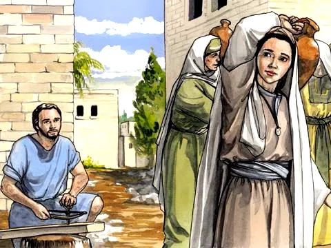
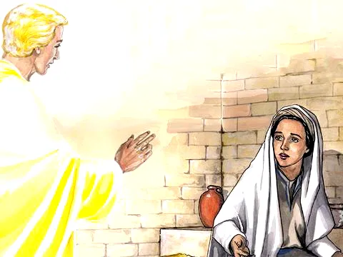
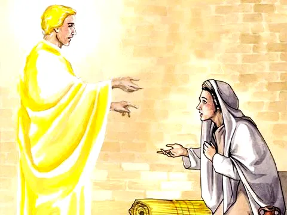

Um Anjo Traz Boas Notícias
Referência Bíblica: Lucas 1:26-38
Qual a maior surpresa que você já teve na vida? Todos esperavam a promessa que Deus havia feito muito tempo atrás: um grande Rei viria para salvar a todos que amam e acreditam em Deus. Mas o tempo passou, passou.... Ninguém imaginava, mas a grande surpresa de Deus estava prestes a acontecer... Vivia na cidade de Nazaré uma moça chamada Maria, que estava noiva de um rapaz chamado José. Eles iam se casar em breve, mas o que Maria não sabia é que estava prestes a receber uma grande notícia! Era uma mensagem surpreendente que ia mudar pra sempre a vida deles... Mas que notícia especial seria essa?
Certo dia, Deus enviou um anjo com uma mensagem para ela: - "Olá Maria!" disse o anjo Gabriel. - "Deus está contigo e tem se agradado de ti!" Maria não sabia o que o anjo queria dizer com essas palavras.
Então o anjo lhe disse: -"Não tenha medo, Maria!. Deus tem uma surpresa maravilhosa: você vai ter um bebê e o nome dele vai ser Jesus. Esse neném será Filho de Deus e será o grande Rei, como foi Davi e vai reinar sobre o povo de Deus para sempre. Então Maria lhe disse: - "Não compreendo, como é que eu posso ter um filho se ainda não sou casada?" O anjo respondeu: não se preocupe, Deus vai fazer isso acontecer através do Seu Espírito. Para Deus não há nada impossível, Maria.
Maria então disse: "Que seja assim. Vou fazer tudo o que o Senhor quiser!" O anjo Gabriel foi embora e Maria foi visitar Isabel, uma parente sua que também estava grávida. "Que surpresa maravilhosa!" Isabel ficou muito contente com a visita de Maria e com a notícia sobre Jesus. Maria então louvou a Deus, de todo coração, por toda Sua bondade e amor!
Moral da História
Deus enviou o anjo Gabriel para dar uma notícia maravilhosa à Maria e ao mundo: Jesus o Rei dos reis nasceria para salvar a humanidade dos seus pecados. Maria aceitou a vontade de Deus. Assim também nós devemos viver e obedecer a vontade de Deus.